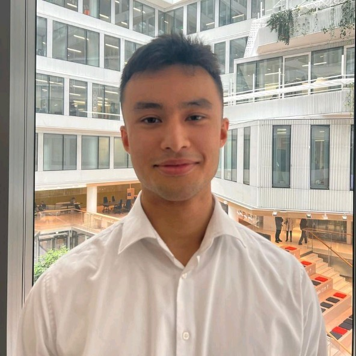

Thrifty AI
Finding efficient representations in the low-data regime, covering few-shot learning, zero-shot adaptation, transfer learning, and foundation models across vision, language, and audio.
BRAIN (Broader Artificial Intelligence)
BRAIN is a research team of CNRS Lab-STICC (UMR 6285) hosted at IMT Atlantique in Brest, France, within the Mathematical and Electrical Engineering department. We investigate questions at the intersection of artificial intelligence, deep learning, signal processing, computer vision, audio, and computational neuroscience.
Finding efficient representations in the low-data regime, covering few-shot learning, zero-shot adaptation, transfer learning, and foundation models across vision, language, and audio.
Lowering the computational and energy footprint of intelligent systems through quantization, pruning, low-rank tensor factorizations, zero-cost architecture search, and embedded hardware implementation.
Leveraging the intrinsic geometry of latent spaces and input domains through graph signal processing, graph neural networks, manifold learning, and non-Euclidean representations.
A 4D spatial-temporal foundation model pretrained on over 60,000 hours of EEG signals, adaptable across diverse clinical and cognitive paradigms.
Reformulating few-shot adaptation of vision-language models through proximal kernel ridge regression in feature space.
Higher-order tensor factorizations across attention projections and layers for parameter-efficient fine-tuning.
Disentangling architectural topology from input data in zero-cost neural architecture search proxies.

 Ismail Amessegher
Ismail Amessegher
 Reda Bensaid
Reda Bensaid
 Lucas Benoit
Lucas Benoit
 Philippe Forest
Philippe Forest
 Baptiste Hilaire
Baptiste Hilaire
 Kaiteng Jiang
Kaiteng Jiang
 Tevchhorpoan Khieu
Tevchhorpoan Khieu
 Lucie Jean-Labadye
Lucie Jean-Labadye
 Elise Lagarde
Elise Lagarde
 Jonathan Lys
Jonathan Lys
 Joshua Rivera
Joshua Rivera

Nolan Sisouphanthong Alexandre Thouvenot
Alexandre Thouvenot